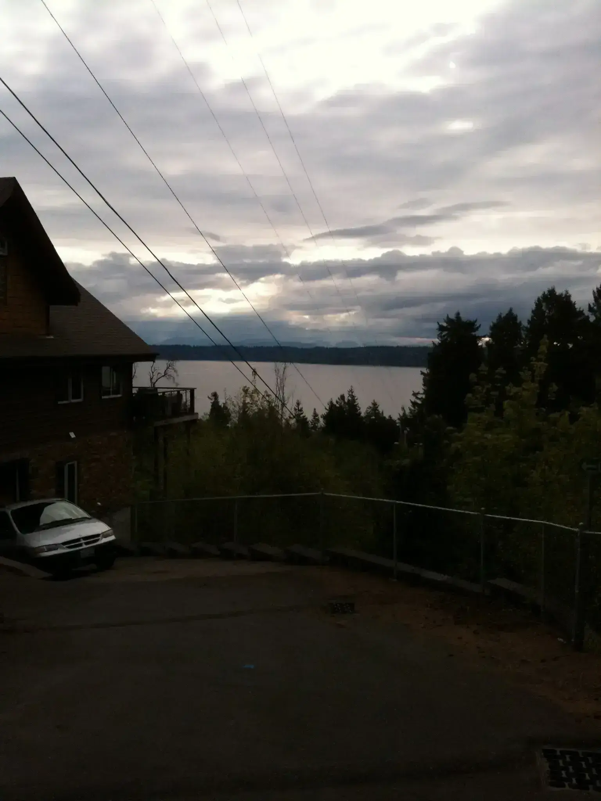

The sky is such a fundamental point of reference that most people rarely notice the influence it has on their minds. It is one of those things, like gravity, that is so present that we cannot help but take it for granted.

你在做什么